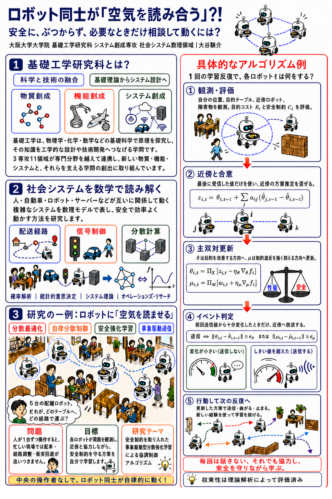

発表者として参加する
参加費：無料 ※交通費等は各自負担です。
内容の変更や修正がある場合は、もう一度回答してください。変更修正はいつでも可能です。
参加のキャンセルは、フォーム内にある「参加取り消しフォーム」から可能です。

別の端末から開く場合はこちらから
https://forms.gle/YYKLUGPnrW2Dq9Mb6
HAKURYO RESEARCH EXCHANGE 2026
2026.9.5SAT
14:00 — 16:30
中高生にとって、大学は未知の領域。
大学には様々な側面がありますが、一つに「研究活動」があります。そして、どのような研究分野があるのかを知っておくことは、中高生にとって学部選びの際に大いに役立ちます。
HAREx (Hakuryo Academic Research Exchange) は、卒業生が母校に戻り、中高生に、ご自身の研究分野を紹介したり、研究の身近さを伝えたりするイベントです。詳しく
研究の内容は、専攻に無関係でも問題ありません。 突き詰めていることであれば、日常生活のものでもなんでも構いません。詳しく
中高生にとって、研究を幅広く捉える機会となり、進路選びの参考となることを期待しています。
友達と母校で集まれる場としてもご活用ください。
講演・展示・ワークショップ。
一番興味があるものを。
スライドや黒板を用いたプレゼンテーション。
使ったスライドは展示にも掲示します。
時間：20分以内なら何分間でも可能です。ポスターや動画などで見に来た生徒に説明します。
お菓子などを置いて、雑談に近い雰囲気で行います。
時間：前半と後半のシフト制生徒自身が手を動かして体験できる形です。
内容や進め方などは完全に自由です。
時間：指定はありません3つの企画を同時開催。
自由回遊スタイルです。
当日の会場のイメージ。3つの企画が並行して開かれ、在校生と卒業生が廊下を通って自由に行き来します。
2時間半のあいだ、
3つの企画が並行して動きます
| 時間 | 講演会 | 展示会 | ワークショップ |
|---|---|---|---|
| 14:00–14:30 | 第1回20分＋交代 | 前半シフト14:00–15:15 | 随時開催全体の組み方を見て、 運営側で割り振ります |
| 14:30–15:00 | 第2回20分＋交代 | ||
| 15:00–15:15 | 第3回20分＋交代 | ||
| 15:15–15:30 | 後半シフト15:15–16:30 | ||
| 15:30–16:00 | 第4回20分＋交代 | ||
| 16:00–16:30 | 第5回20分＋交代 |
発表者自身も自由回遊スタイルで、他の発表を見ることもできます。
研究室のテーマに限らず、
自分なりに考え、試してきたことを
持ち寄ってください🔥
HARExでは研究を、単に大学で行われている専門的な活動として捉えません。
そのため、大学での研究テーマ以外でも、私生活で試行錯誤したことや、個人的に突き詰めてきたことも大歓迎です。
そして、ご自身の専攻分野がどんな世界なのかも少し紹介してください。大学のHPにある説明を引っ張ってくるだけでも十分です。中高生にとって、研究を幅広く捉える機会となり、進路選びの参考になることを期待しています。
2つが重なっても重なっていなくても、どちらでもOK。
「研究トピック」の例
専門的な話の場合、中高生向けに優しく解説があると聞きやすいと思われますが、可能な範囲で大丈夫です。
アットホームな雰囲気で開催するので
完璧なスライドやポスターは不要です
スライドやポスターは 最小限で構いません。動画や実物を用いた説明も自由に可能です。
なお、発表資料は運営側で管理しないため、開催までに各自でご準備・ご持参をお願いします。
PCはご自身のものをご持参ください。 講演で使ったスライドは、全体または要所を印刷していただき、展示室にも掲示する予定です。
各自で印刷してご持参ください。印刷したスライドを並べる形でも構いません。印刷が難しい場合はご相談ください。
ポスターのイメージ例です。
実物を持ち込んでの実演もできます。実物については、ご自身で保管・管理をお願いいたします。
ポスターのサンプルですが、発表スライドも同様の構成で問題ありません。スライド、ワークショップ資料についても鋭意準備中です。

PowerPoint用テンプレートは現在準備中です。
生成AIを利用する方は、[上記のサンプルポスター・以下の構成例・研究資料]
をプロンプトに入れると、簡単にスライドやポスターを作成できます。
時間配分の目安：導入3分／本題12分／まとめ3分／質疑2分
ご自身が所属している研究科や専攻について説明し、その一例としてご自身の研究を紹介すると作りやすいです。
使用する機材等、準備について相談したい点があればお気軽にご連絡ください。
参加費：無料 ※交通費等は各自負担です。
内容の変更や修正がある場合は、もう一度回答してください。変更修正はいつでも可能です。
参加のキャンセルは、フォーム内にある「参加取り消しフォーム」から可能です。
別の端末から開く場合はこちらから
https://forms.gle/YYKLUGPnrW2Dq9Mb6
イベント内容の充実、開催に向けた準備、当日の裏方作業などをするメンバーを募集しています。
発表なしでも登録することが可能ですので、当日発表なしで参加されたい方もぜひ運営メンバーに加わってください！
お願いする作業の例

別の端末から開く場合はこちらから
https://forms.gle/cjLoA4tKZN4CbxaV6
HARExは校内限定イベントです。
校内限定イベントで、写真撮影も禁止としていますが、念のため機密情報などは発表しないようにお願いします。
一般の参加者による撮影は原則禁止です。運営の記録用と、学校の広報のための撮影は行う場合があります。研究内容が写る場合は、当日各スペースに可否を表示する予定です。
当日来られなかった在校生向けに、発表の様子をまとめたPDFを作る予定です。写真・発表タイトル・概要・スライドの一部などを載せます。
当日ネックストラップに入れたり、（任意で）在校生に手渡しするために使用します。運営側で用意しますが、ご自身の名刺がある場合はそちらをお使いいただいても構いません。
撮影の可否・PDFへの掲載可否・名刺の記載内容は、後日まとめてアンケートで伺います。
それぞれの「大学生のリアル」を、
研究を題材に持ち寄る場
大学生って大学でどんなことをしているのだろうか。
中高生にとって、研究を幅広く捉える機会となり、進路選びの参考になることを期待しています。
このサイトは、発表者として参加を考えている卒業生向けの案内です。
URLは検索等では公開していませんので、外部には公開せず、必要な方の間での共有をお願いします。